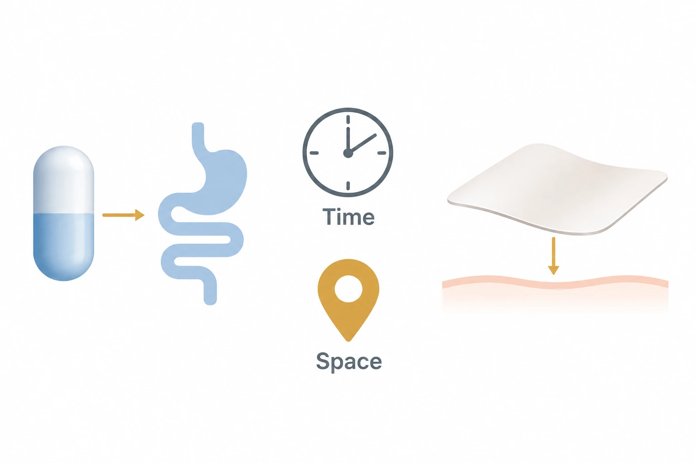

The question behind this study
This review examines electronic medicines through where they act and how long they operate. It compares ingestible and patch devices, bioresorbable systems and chronic implants, linking stimulation, drug release and sensing with stability in the body.
Where electronic medicines work and for how long
The review groups electronic medicines into ingestible or patch devices, bioresorbable devices and chronic implants, considering both location and duration.
Designs for release and compliant sensing
The review describes heated-fiber release and antifouling, compliant sensing designs; this does not independently establish therapeutic efficacy.

AI-generated concept showing spatial and temporal themes and ingestible and patch-device examples from the electronic-medicine review abstract.
Device shapes, pointers and the clock are thematic symbols. They do not reproduce internal designs, communication, sensing, therapy or control mechanisms, dosing schedules or clinical effects.
This is not a reproduced paper figure and does not establish permission to reuse the original figure.
Dissolution tests and animal recordings
Electrode dissolution was tested in pH 10 phosphate-buffered saline (PBS) at 37°C for two months. This was separate from rat recordings and cannot be converted into a lifetime in the human body.
Residence time versus two-way communication
The swine device distinguished up-to-14-day bilateral communication from 20.1-day residence and later unilateral temperature transmission.
Long-term stability and clinical questions
Degradation products, scarring, stability in body fluids and clinical validation remain unresolved. Cited primary papers and supplementary information are outside this account’s scope.
Related studies
Wirelessly operated bioelectronic sutures for the monitoring of deep surgical wounds
DOI: 10.1038/s41551-021-00802-0 ↗
The related abstract describes battery-free suture monitoring in live pigs, a concrete example of sensing at a selected body site.
Monitoring does not establish drug delivery or therapeutic efficacy.
Abstract-based introductionSources used in this summary
This summary draws on the main text and original figures. The complete supplementary materials and underlying data have not been independently reviewed.